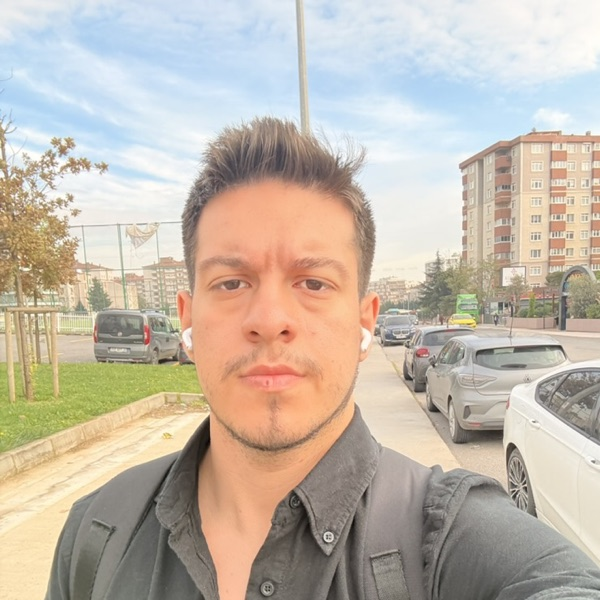
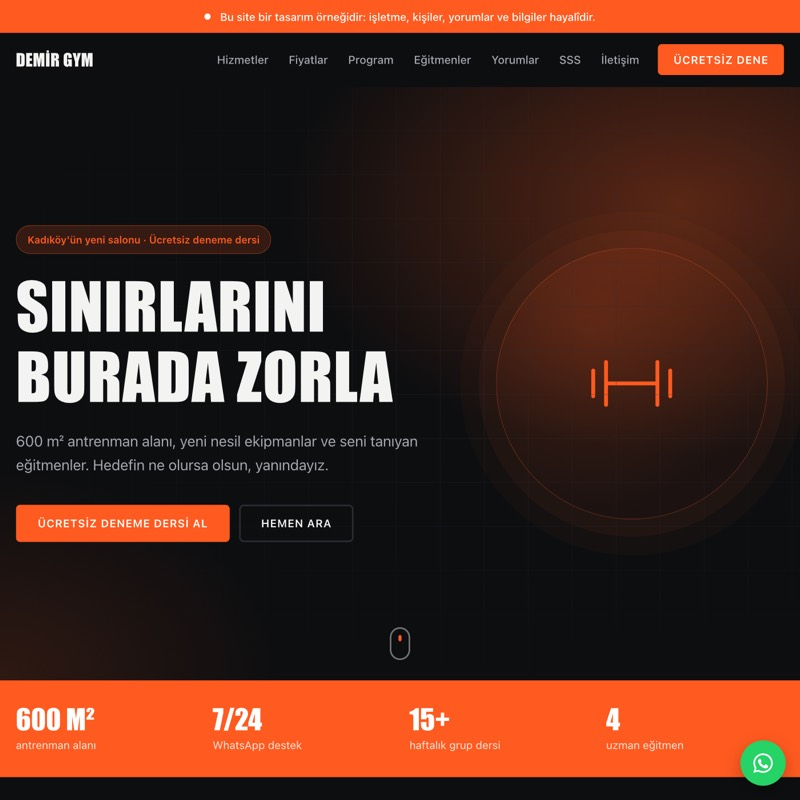
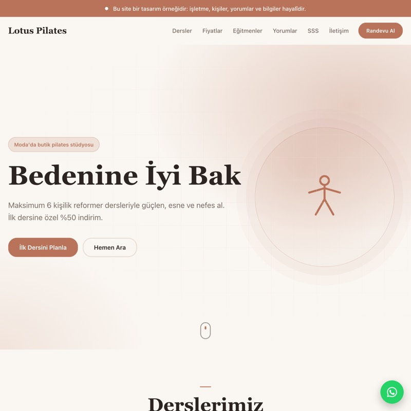

İşletmenizeyakışan birweb sitesi.
Spor salonu, kafe, kuaför, berber ve dükkânlar için hızlı, mobil uyumlu ve modern siteler tasarlıyorum. Müşterileriniz sizi Google'da bulsun, tek dokunuşla WhatsApp'tan randevu alsın.

Her işletmeye kendi karakteri.
Hepsi aynı sağlam altyapıyla, ama her biri farklı bir düzen, renk ve tipografiyle. Tıklayıp canlı olarak gezebilirsiniz.

Usta Makas
Berber
Papatya Çiçek Atölyesi
Çiçekçi
Mola Kahve Evi
Kafe
Tatlı Köşe
Pastane
Nefes Yoga
Yoga stüdyosu
Demir Gym
Spor salonu
Lotus Pilates
Pilates stüdyosuBu siteler tasarım örnekleridir; işletmeler hayalîdir. Kaynak kodu: GitHub
Güzel görünmekle kalmayan siteler.
Siteniz bir vitrin değil, müşteri getiren bir araç olmalı. Her sitede bunlar hazır gelir.
Telefonda kusursuz
Müşterilerinizin çoğu telefondan girer. Her ekran boyutunda hızlı açılır, rahat okunur.
WhatsApp'tan randevu
Müşteri hizmeti ve günü seçer, mesaj hazır şekilde WhatsApp'ınıza düşer.
Canlı açık / kapalı
Çalışma saatlerinize göre "Şu an açık" bilgisi anlık güncellenir.
Google'da görünür
Adres, saat ve iletişim bilgileriniz Google'ın anlayacağı şekilde hazırlanır.
Hızlı teslim
Instagram'ınızdaki fotoğraf ve bilgilerden yola çıkarak birkaç gün içinde yayında.
Kolay güncelleme
Fiyat, kampanya veya saat mi değişti? Bir mesajınızla aynı gün güncellenir.
Dört adımda yayındasınız.
Tanışalım
İşletmenizi, müşterilerinizi ve sitede ne görmek istediğinizi konuşuyoruz.
Tasarım
Size özel düzen ve renklerle bir taslak hazırlıyorum; ücretsiz önizleme gönderiyorum.
Düzeltmeler
Beğenmediğiniz her detayı birlikte değiştiriyoruz, onayınız olmadan yayına çıkmaz.
Yayın
Alan adınıza bağlıyor, Google'a tanıtıyorum. Sonrasında da yanınızdayım.
Merhaba, ben Emircan.
İstanbul'da yaşayan bir frontend geliştiriciyim. Temiz arayüzler, akıcı animasyonlar ve her ekranda kusursuz görünen sayfalar yapmayı seviyorum.
Mahallemdeki birçok işletmenin harika bir Instagram'ı olduğu hâlde bir web sitesi olmadığını fark ettim. Bu yüzden küçük işletmeler için tek bir ayar dosyasıyla özelleşen bir web sitesi sistemi geliştirdim; böylece her işletmeye hızlı ve uygun fiyatlı, ama kendine özgü bir site sunabiliyorum.
Haydi konuşalım.
İşletmeniz için bir web sitesi mi istiyorsunuz, yoksa ekibiniz için bir frontend geliştirici mi arıyorsunuz? Bir mesaj yeterli, genellikle aynı gün dönüyorum.
emirrcankaraman@gmail.com